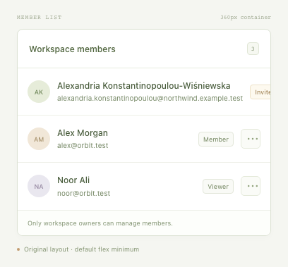
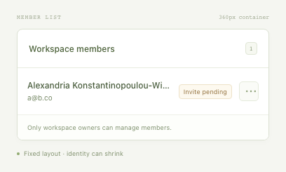

A smaller case.
A clearer failure.
A valid member fixture pushed its action outside the row. The saved test verifies the original and fixed demo variants.
14cases checked
5failing cases
12reduction probes
RED → GREENexported test verified
Normal data
Passing control

Original failure
The action extends 86px outside its row.

Reduced case
The action extends 26px outside its row.

Fixed layout
Same input, same rule.

Discovery log
| Scenario | Result | Observation |
|---|---|---|
| Compound name + pending invitation | failed | The action extends 86px outside its row. |
| Long email address | failed | The action extends 74px outside its row. |
| One-letter name | passed | The action is inside its row and receives pointer events at its center. |
| Missing avatar and role | passed | The action is inside its row and receives pointer events at its center. |
| Vietnamese diacritics | passed | The action is inside its row and receives pointer events at its center. |
| Emoji grapheme in a name | passed | The action is inside its row and receives pointer events at its center. |
| Seeded combination 1 | failed | The action extends 24px outside its row. |
| Seeded combination 2 | passed | The action is inside its row and receives pointer events at its center. |
| Seeded combination 3 | failed | The action extends 35px outside its row. |
| Seeded combination 4 | passed | The action is inside its row and receives pointer events at its center. |
| Seeded combination 5 | passed | The action is inside its row and receives pointer events at its center. |
| Seeded combination 6 | passed | The action is inside its row and receives pointer events at its center. |
| Seeded combination 7 | failed | The action extends 35px outside its row. |
| Seeded combination 8 | passed | The action is inside its row and receives pointer events at its center. |
Reduction trail
Best found among the declared candidates, under a 30-probe budget. No global-minimum claim.
| Remove unrelated member | Kept · same failure | The action extends 86px outside its row. |
| Remove unrelated member | Kept · same failure | The action extends 86px outside its row. |
| Remove optional avatar | Kept · same failure | The action extends 44px outside its row. |
| Remove optional role | Kept · same failure | The action extends 44px outside its row. |
| Use the simpler active state | Rejected | The action is inside its row and receives pointer events at its center. |
| Use a short valid email | Kept · same failure | The action extends 26px outside its row. |
| Try shorter name: Jo | Rejected | The action is inside its row and receives pointer events at its center. |
| Try shorter name: Maya Chen | Rejected | The action is inside its row and receives pointer events at its center. |
| Try shorter name: Alexandria | Rejected | The action is inside its row and receives pointer events at its center. |
| Try shorter name: Konstantin Oberhauser | Rejected | The action is inside its row and receives pointer events at its center. |
| Try shorter name: Aleksandra Wiśniewska | Rejected | The action is inside its row and receives pointer events at its center. |
| Try shorter name: Konstantinopoulou-Wiśniewska | Rejected | The action is inside its row and receives pointer events at its center. |
Reduced input
{
"containerWidth": 360,
"members": [
{
"id": "member-primary",
"name": "Alexandria Konstantinopoulou-Wiśniewska",
"email": "a@b.co",
"role": null,
"status": "invited",
"avatar": null
}
]
}